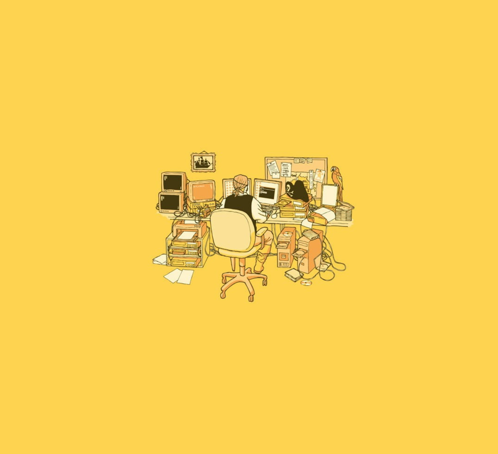

Highlights include linear regression models, data visualization,
prediction mechanics, and other data fit models.
Social-Regional Analysis of COVID-19
- University of California Berkeley : 2020 :
Using the data provided from the Berkeley Yu Group,
this report analyzed the relationship between
demographic measures (income, political region, rural-urban etc.)
of regions with the impact of the recent Corona Virus and predicted
relationships using sklearn's Log Regression model. Validated by cross validation
and multi-dimensional data visualization and mapping.
Food Safety Investigation and Mapping - University of California Berkeley : 2020 :
Investigation of restaurant food safety scores for restaurants in San
Francisco. Using pandas and data visualization through matplotlib and seaborn,
this analysis looks at the geographic variances in food inspection scores.
Spam Email Feature Engineering and Linear Regression
- University of California Berkeley : 2020 :
Utilization of feature engineering and sklearn (Logistic Regression) to
process email data, fit models,
validate performance of model, minimize overfitting and
generate precision-recall curves.

Highlights include data analysis, machine
learning, simulations, and mapping in Python, Java, SQL, and R.
Nanotechnology Research with Jadoo Tech Inc. : 2019 :
Undergraduate student apprentice for Nanotechnology lab mainly focused on
electrical hardware and software design and
statistical data analysis. After various testing sequences,
we will be moving into electrochemical reactions and data analytics. (PYTHON)
Build Your Own World Project with University of California Berkeley : 2019 :
This is a large design project entailing an engine for generating
explorable worlds. Additionally, we created a game aspect to exploring
the worlds by incorporating interactivity and user interfaces. (JAVA)
NBody Simulation Project - University of California Berkeley : 2019 :
A program simulating the motion of N objects in a plane,
accounting for gravitational forces mutually affecting each
object as demonstrated by Newton. The project will draw an
animation of bodies floating around in space tugging on each
other with the power of gravity.(JAVA)
BearMaps Project - University of California Berkeley : 2019 :
A system inspired by Google Maps, the project programming
utilizes K-d trees, ExtrinsicPQs, and A* Algorithms to
emulate a working map. (JAVA)
Economic Scholar Citations Analysis - University of California Berkeley : 2019 :
An analysis of various aspects of the google scholar citations
data gathered from web scraping the respective scholar profile pages
of Abhijit Banerjee and Ester Duflo, two Nobel Laureate
Winners from the same decade. (R)
Financial Investment Projections Shiny Web App- University of California Berkeley :
2019 : This Shiny App takes in several variants to display a timeline
graph of the cumulative investment over time. Taking in various
outputs, the app displays a reactive timeline plot of different
modes of investment. (R)
Various projects regarding data analysis and object-oriented
programs and emulators.
Special Relativity Essay - International Baccaleaureate : 2018 :
A 4000-word in depth analysis of modern relativity theory
and experiments that test its limits, centered at the
question: "To what extent is Einstein's time dilation postulation valid?"
Data Analysis with Rutherford Gold Foil Simulation - KyungHee University : 2018 :
Analysis of Geant4 10000 simulated electron pathways to emulate the
Rutherford Gold Foil Experiment. ODE and python analysis. (PYTHON)
Yelp Map - University of California Berkeley : 2018 :
A visualization of restaurant ratings of Berkeley using
machine learning and the Yelp academic dataset. Berkeley
is segmented into regions, where each region is shaded by
the predicted rating of the closest restaurant (yellow
is 5 stars, blue is 1 star) in a Voronoi diagram. (PYTHON)
Ants - University of California Berkeley : 2018 :
This large-scale project revolves around the back-end
development of a tower defense game, Ants Vs. SomeBees.
This project combines functional and object-oriented
programming paradigms. (PYTHON)
Scheme - University of California Berkeley : 2018 :
An interpreter for a subset of the scheme
language, as well as several smaller programs in scheme.(PYTHON, SCHEME)
2017 projects consist of summer research at Yale University.
Orbital Optimization of Near-Earth Asteroid YP11 - Yale University : 2017 :
Month analysis and future modelling and projection of astronomical asteroid
pathways data calculated from telescope observations.
(PYTHON)